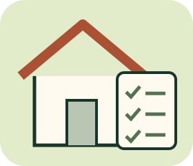

HOME BUYING / KNOW WHAT TO CHECK
買房
知識王
算清現金、讀懂資料、再做決定。

先練習，不急著下訂
12關虛構情境：費用填答、可操作的月付試算、文件與生活情境判讀。範例金額不是即時房價、銀行保證、稅率或投資推薦。
無帳號、無倒數，不儲存或上傳作答；重新整理清空。不是房屋鑑定、核貸、法律或稅務個案建議。
房貸小實驗
只輸入虛構數字即可；本息平均攤還，年利率視為全期固定，無寬限期、未含費用。
可填到小數點後兩位；允許四捨五入誤差0.02。欄位空白或超出範圍不驗收。
本輪學習回顧
答對不代表已具備買房、驗屋或議價能力。真實交易仍需取得文件並依個案確認。
資料與適用範圍
查核日2026-11-13。契約情境依行政院所列成屋買賣定型化契約及附件（115年4月1日施行版本）；實價查詢與銀行試算提供官方延伸入口。數字與物件均為自編，不代表真實成交。